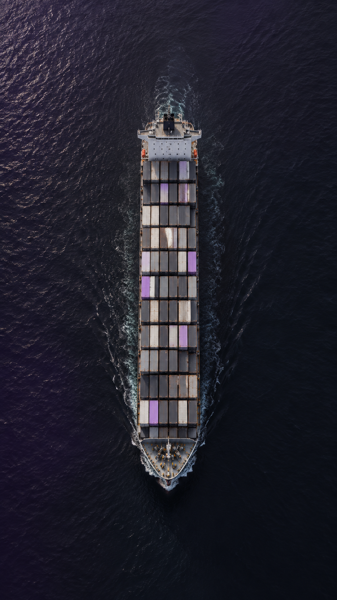

تكلفة الاستيراد / كنز يشرح
رحلة التكلفة
من المصنع لحدّ عندك
سعر شراء السلعة هو البداية فقط.
01
سعر المنتج
القيمة الأصلية
المدفوعة للمورّد.
02
الشحن والتأمين
تكلفة نقل الشحنة
والتأمين عليها.
03
الجمارك والضرائب
تختلف حسب السلعة
وبلد الاستيراد.
04
رسوم أخرى
مثل رسوم التخليص
والمناولة والتوصيل.
احسب تكلفة الوصول كاملة.
الأرقام لترتيب البنود، وليست نسبًا من التكلفة.